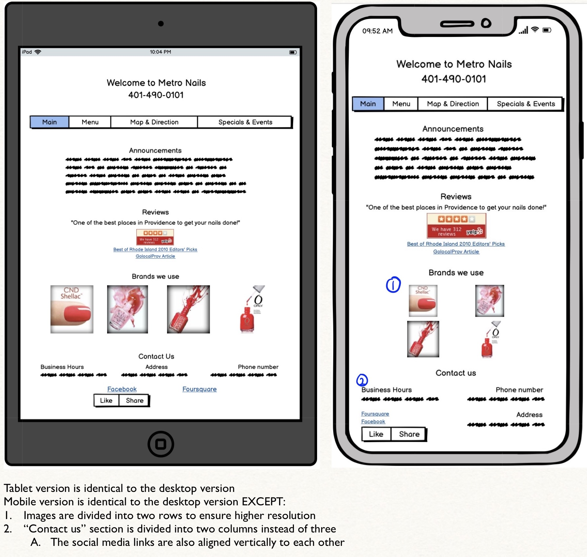
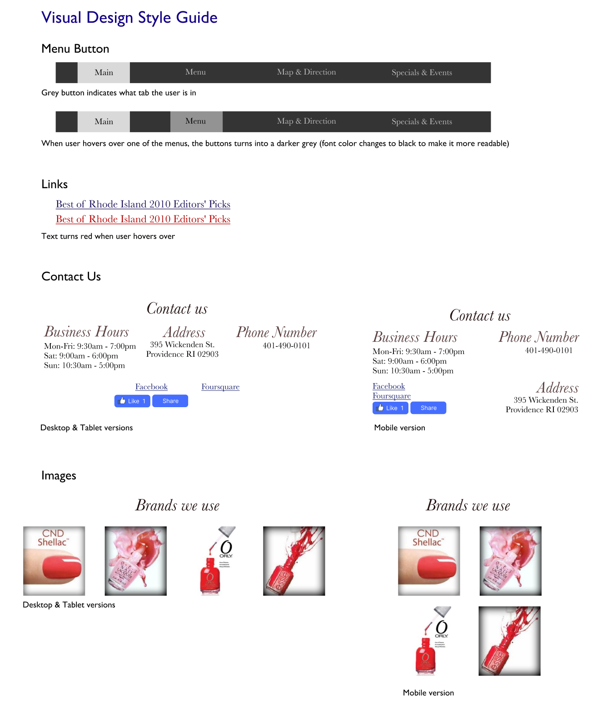
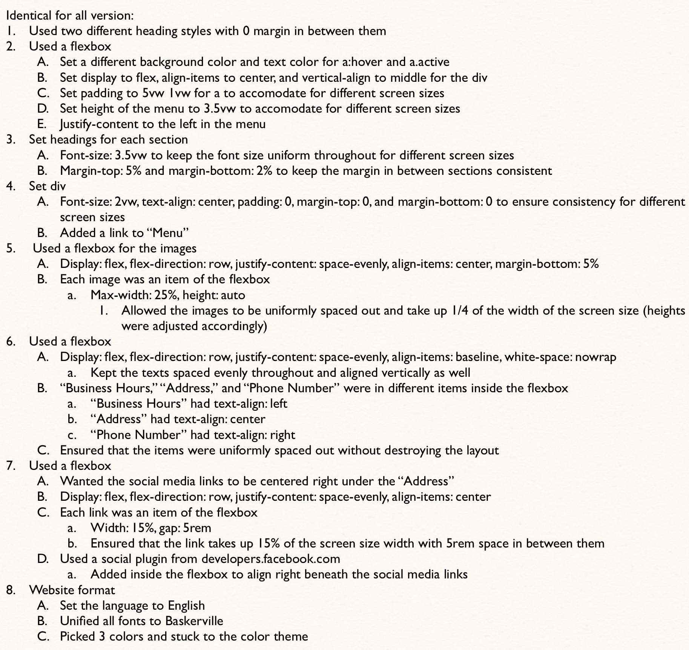

Responsive Redesign
Why Metro Nail?
Metro Nails is my favorite nail salon in Providence; however, when I recommended this place to my friend, she was hesitant to book an appointment, because the website was difficult to navigate and the website did not look reliable, so I decided to investigate why it does not look reliable and how to improve the website.
Their Website
Check out their website!
Problems in Usability
The website is straightforward, as the main page does not contain many features: instructions and general information, reviews, menu, directions, and events. However, there are many confusing interactions that decrease the usability (unintuitive functions), learnability (difficult to learn because of so many unnecessary features), and memorability (hard to remember how to use the website because of the confusing layout).
1. Repetitive: some adjacent interactions are identical to each other
a. Example: the “yelp” and “Reviews on Yelp” buttons lead to the same link
2. Inconsistent: the fonts, colors, size, and alignments are not uniform
3. Misleading: some texts are underlined, and the red fonts that are used for hyperlinks are also used for other random texts
a. Seems like they are also hyperlinks
4. Unmemorable: no organization (no sections whatsoever) and irrelevant images
5. Dysfunctional: many of the hyperlinks are connected to an expired/removed link
6. Inefficient: many unnecessary buttons and texts
a. Example 1: the button on the bottom to “Create a Free Website”
b. Example 2: title “METRONAILS 401-490-0101” seems unnecessary (button redirects to the main page, which the user is already in)
c. Example 3: puts the phone number and name of the nail salon twice
7. Unreadable and unlearnable: unintuitive interactions and messy layouts
Accessibility
WebAIM WAVE detected a total of 8 different types of errors and alerts:
1. Missing alternative text
2. Language missing
3. Empty headings
4. Contrast errors
5. Justified text
6. No page regions
7. Redundant link
8. Underlined text
I agree with all of the errors and alerts. No images, including spacer images, had alternative texts, making the website unreadable when the images are unavailable. The language of the page is not identified, and there are multiple empty headings that makes the website messy and confuse the users. The text and background color have similar shades and have low contrast, which can be harder to read for some users. There are no regions defined, not even for the main content, which contributes to the messy layout. The adjacent links that direct the users to the same location make the website inefficient, and the underlined texts mislead the users that they are linked texts.
Low-fidelity Wireframing

Visual Design Style Guide

High-fidelity Prototyping
Scroll to the right or click on one of the buttons below to see the high-fidelity prototyping for desktop, tablet, and phone!

Redesigned Website
Check out the website makeover!